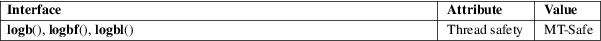

logb, logbf, logbl − get exponent of a floating-point value
Math library (libm, −lm)
#include <math.h>
double
logb(double x);
float logbf(float x);
long double logbl(long double x);
Feature Test Macro Requirements for glibc (see feature_test_macros(7)):
logb():
_ISOC99_SOURCE || _POSIX_C_SOURCE >= 200112L
|| _XOPEN_SOURCE >= 500
|| /* Since glibc 2.19: */ _DEFAULT_SOURCE
|| /* glibc <= 2.19: */ _BSD_SOURCE || _SVID_SOURCE
logbf(),
logbl():
_ISOC99_SOURCE || _POSIX_C_SOURCE >= 200112L
|| /* Since glibc 2.19: */ _DEFAULT_SOURCE
|| /* glibc <= 2.19: */ _BSD_SOURCE || _SVID_SOURCE
These functions extract the exponent from the internal floating-point representation of x and return it as a floating-point value. The integer constant FLT_RADIX, defined in <float.h>, indicates the radix used for the system’s floating-point representation. If FLT_RADIX is 2, logb(x) is equal to floor(log2(x)), except that it is probably faster.
If x is subnormal, logb() returns the exponent x would have if it were normalized.
On success, these functions return the exponent of x.
If x is a NaN, a NaN is returned.
If x is zero, then a pole error occurs, and the functions return −HUGE_VAL, −HUGE_VALF, or −HUGE_VALL, respectively.
If x is negative infinity or positive infinity, then positive infinity is returned.
See math_error(7) for information on how to determine whether an error has occurred when calling these functions.
The following
errors can occur:
Pole error: x is 0
A divide-by-zero floating-point exception (FE_DIVBYZERO) is raised.
These functions do not set errno.
For an explanation of the terms used in this section, see attributes(7).

C11, POSIX.1-2008.
C99, POSIX.1-2001.
|
logb() |
4.3BSD (see IEEE.3 in the 4.3BSD manual). |
ilogb(3), log(3)